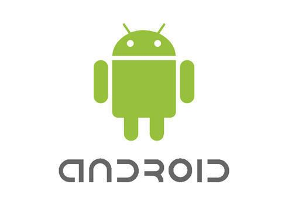

MENU

ANDROID
Android es un sistema operativo basado en el núcleo de Linux, desarrollado principalmente para
dispositivos móviles como teléfonos inteligentes y tabletas. Inicialmente creado por Android Inc.,
en 2005 fue adquirido por Google, quien lo ha convertido en una de las plataformas más populares del
mundo. Su éxito radica en su naturaleza de código abierto, lo que permite a fabricantes y
desarrolladores personalizar y adaptar el sistema según sus necesidades y preferencias.
El ecosistema Android incluye millones de aplicaciones disponibles en Google Play Store,
abarcando categorías como productividad, entretenimiento, educación y juegos. Gracias a su
flexibilidad, Android es compatible con una amplia variedad de dispositivos de diferentes marcas,
como Samsung, Xiaomi, Motorola y más.
Uno de los aspectos destacados de Android es su interfaz altamente personalizable. Los usuarios
pueden modificar widgets, temas y fondos de pantalla para adecuar su experiencia de uso.
Además, Google lanza regularmente nuevas versiones del sistema operativo, cada una con mejoras
en seguridad, rendimiento y nuevas funcionalidades.
Android también ha trascendido los teléfonos inteligentes. Se encuentra presente en relojes
inteligentes, televisores, autos y hasta electrodomésticos, promoviendo un ecosistema interconectado
que facilita la vida diaria.
En resumen, Android no es solo un sistema operativo, sino una plataforma integral que combina
innovación, accesibilidad y adaptabilidad, siendo un pilar fundamental en la era de los dispositivos
inteligentes. Su impacto global sigue creciendo, ofreciendo a millones de personas una experiencia
tecnológica única y personalizada.